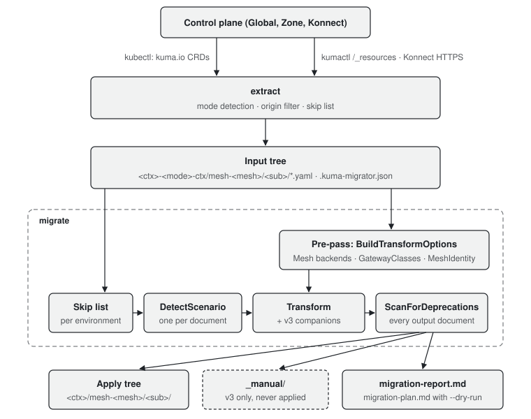

Architecture
How kuma-migrator is built, from reading the control plane to writing the report.
kuma-migrator is a Go CLI built on cobra. It has two
commands that do work, extract and migrate, and they share only the on-disk layout and a
small metadata file. extract reads a control plane and writes YAML files. migrate reads
YAML files and writes YAML files plus a report. Neither command writes to a control plane.
| Package | Role |
|---|---|
cmd/ |
Flag parsing; calls into pkg/ |
pkg/extractor |
extract: control plane discovery, mode detection, origin filtering, file layout |
pkg/migrator |
migrate: scenario detection, transforms, deprecation scan, report |
pkg/resource |
Kind → subfolder map shared by both commands |
pkg/config |
~/.config/kuma-migrator.yaml: skip lists, TLS setting |
pkg/ui |
Console output |
YAML is parsed with sigs.k8s.io/yaml, which goes
through JSON and so matches the JSON tags of Kuma's own Go types.
Pipeline

extract
pkg/extractor has one
entry point per connection mode. Both end in the same writer,
writeResourceFiles in
extractor.go,
which splits multi-document and list responses, applies the filters and writes one file per
resource.
| Step | --kube-context (kube.go) |
--kumactl-context (kumactl.go) |
|---|---|---|
| Find the control plane | the Kubernetes context | ~/.kumactl/config or $KUMACTL_CONFIG; bearer token from authConf or an Authorization header |
| Detect mode | KUMA_MODE and KUMA_MULTIZONE_ZONE_NAME on kuma-control-plane (kuma-system) or kong-mesh-control-plane (kong-mesh-system) |
GET <cp>/config; Konnect (api.konghq.com) is always global |
| Detect environment | always kubernetes |
environment from GET <cp>/config |
| Discover types | kuma.io/v1alpha1 CRDs |
GET <cp>/_resources; readOnly ignored |
| List meshes | kuma.io/mesh label of each resource |
kumactl get meshes; Konnect: GET <base>/meshes |
| Fetch | kubectl get <kind> -o yaml |
kumactl get <type> [--mesh <m>] -o yaml; Konnect: GET <base>/meshes/<m>/<type> |
| Format | Kubernetes | Universal, or Kubernetes with --output-format kubernetes (universalToKubernetes) |
Mode and filtering live in
cpmode.go and
extractor.go:
| Mode | Directory label | Origin filter |
|---|---|---|
global |
<context>-global-ctx |
drop kuma.io/origin: zone (recorded as ZoneOriginSkip and printed with the zone to target); drop MeshGatewayInstance, MeshGatewayConfig |
zone |
<context>-zone-ctx |
keep kuma.io/origin: zone; keep gateway kinds without an origin label; drop the rest |
standalone |
<context>-standalone-ctx |
none |
| unknown | <context>-unknown-ctx |
none |
Each context directory gets a .kuma-migrator.json (ContextMeta: tool, context,
cpMode, isKonnect, environment), written before any resource. migrate reads it back
through ReadContextMeta for two decisions: the skip list (environment) and the apply
command in the report (tool, context, isKonnect).
On-disk layout
<dir>/
<context>-<mode>-ctx/
.kuma-migrator.json
mesh-<mesh>/<sub>/<Kind>-[<namespace>-]<name>.yaml
global-scoped-resources/<sub>/...
_manual/mesh-<mesh>/<sub>/... ← migrate --to-latest v3 only
migration-report.md ← migrate only
<sub> comes from resource.KindSubfolder
(subfolder.go):
resiliency, routing, zero-trust, observability, mesh, other. migrate recognises
the context and mesh from the path (runMigration in
migrator.go):
the first path component that is not a kind subfolder is the context, the second one, unless
it is global-scoped-resources, is the mesh with its mesh- prefix stripped. Output paths
mirror input paths, with three exceptions: each document goes to the subfolder of its
output kind, Gateway API output goes to global-scoped-resources/, and under v3 a
document that 3.0 cannot accept goes to _manual/.
migrate
Plan (--dry-run) and Migrate both call runMigration(..., writeFiles), so the preview
and the real run cannot diverge. runMigration does three things in order.
Pre-pass
BuildTransformOptions in
legacybackend.go
walks the whole input tree once and builds the indexes that a single document cannot provide:
| Index | Built from | Used by |
|---|---|---|
MeshBackendIndex |
Mesh.spec.logging.backends, Mesh.spec.tracing.backends |
TrafficLog/TrafficTrace → MeshAccessLog/MeshTrace: the legacy policy names a backend, the new one declares it inline |
GatewayClassIndex |
MeshGatewayInstance kuma.io/service tag → GatewayClass name |
MeshGateway → Gateway: spec.gatewayClassName |
MeshIdentityIndex |
meshes that have a MeshIdentity |
MeshExternalService under v3: 3.0 needs a workload identity on the client |
A missing index is not an error: the conversion that needs it prints a warning naming what to write by hand.
Per file and per document
processFile splits each file into documents and handles each one:
-
Skip list.
skipPolicypicks the Kubernetes or Universal list from the context'senvironment, falling back to the document shape (typewithoutkindmeans Universal). -
Scenario.
DetectScenario(detect.go) returns exactly one scenario. The checks run in this order, first match wins:Order Check Scenario 1 ExternalServiceExternalService 2 OPAPolicyOPAPolicy 3 MeshGateway,MeshGatewayInstance,MeshGatewayRouteGateway 4 Meshwith embedded observability or passthroughMesh (else Passthrough) 5 a recognised non-policy kind ( ContainerPatch)Passthrough 6 sources/destinationspresent, or a legacy kindLegacy 7 a rules[]kind withfrom[]and no service tagsRules 8 no kind, or a kind not starting with MeshSkipped 9 MeshSubset, a service tag, or a_svc_MeshServicename in anytargetRefSubset 10 anything else Passthrough Universal documents are normalised first:
typeis read askind. -
Transform.
TransformDocumentWithOptions(transform.go) routes to the scenario's transform. A transform returns a list of documents, so one input can produce several outputs.Scenario Transform Source Legacy transformScenarioLegacy, conf conversion per kindtransform.go,legacyconf.goSubset transformScenarioSubset,ConvertTargetRefconvert.goRules TransformFromToRulesForTargetrulesapi.goMesh TransformMeshForTargetmesh.go,v3_mesh.goExternalService TransformExternalServiceexternalservice.goGateway TransformMeshGateway,TransformMeshGatewayInstance,TransformMeshGatewayRoutegateway.go,gatewayroute.goOPAPolicy TransformOPAPolicyopapolicy.goPassthrough, Skipped copied; under v3 a Meshstill goes throughtransformPassthroughMeshForV3v3_mesh.go -
v3 companions. Under
--to-latest v3, two passes run on the transform's output before the scan.convertInlineOtelEndpointsForV3replaces each inline OpenTelemetry endpoint with abackendRefand appends a generatedMeshOpenTelemetryBackenddocument.removedGatewaySourceNoteadds the delete-before-upgrading note for a convertedMeshGateway/MeshGatewayRoute. TheMeshtransform adds its own companions:MeshTLSfor a permissive mTLS backend andMeshPassthroughfor outbound passthrough. -
Deprecation scan.
ScanForDeprecations(deprecation.go) runs on every output document, whatever the scenario, including passthrough and skipped documents. It switches on the kind, applies the auto-fixes (for examplesidecar.regex→profiles.exclude,spiffeId→spiffeID), and returns warnings for everything it does not rewrite. Under v3 it also runs the 3.0 rewrites that apply to any policy: label-onlytargetRefs, removal of control-plane-owned labels, routebackendRefs. The v3-specific checks are in thev3_*.gofiles. -
Workload scan.
ScanWorkloadEnvVarsandScanKumaAnnotations(workload.go) look at the input document forkuma.io/service-encoded addresses in env vars and"yes"/"no"annotation values. Their results feed the report's Action Items.
A transform error keeps the original document. Under v2 it is written back to the apply tree.
Under v3 it goes to _manual/, along with any output that is still a kind 3.0 removes
(MeshGlobalRateLimit, Universal ZoneIngress/ZoneEgress).
Target version
TargetVersion (target.go)
is threaded from the flag through runMigration, every transform and ScanForDeprecations.
The two targets share the code path; each check that differs asks target.IsV3(). See
Target versions.
Report
report.go renders
the MigrationReport collected during the walk into Markdown. Each FileReport holds the
input path, every output path (OutputRelPaths), the _manual/ paths (ManualRelPaths) and
one DocChange per document with its scenario, warnings and error.
The Apply Checklist is computed from that data:
collectApplyDirsgroupsOutputRelPathsby directory, orders contexts Global/standalone first and zones after, and orders subfoldersresiliency,routing,zero-trust,observability,other, withmeshlast.- For each context,
ReadContextMetadecides betweenkubectl apply -f <dir>/and onekumactl apply -f <file>per file, with akumactl config use-contextreminder. _manual/paths are never inOutputRelPaths, so no step applies them.- Under v3,
collectV3Deletionslists every source object of a kind 3.0 removes, with its replacement or_manual/copy and a delete command for the extraction tool. It produces Delete Before Upgrading to 3.0 and the matching checklist step.
See Output and reports and Apply.
Tests
Every transform has unit tests next to it (*_test.go). Inputs are inline YAML in the test
files. pipeline_v3_test.go runs whole input trees through runMigration on both
targets. Run them with make test. See
CONTRIBUTING.md for how to
add a scenario.